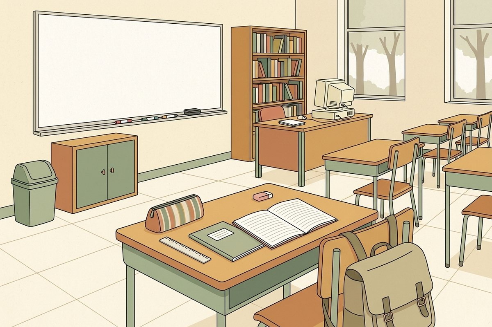

🖼️ Наш класс

Ты сидишь за партой на первом плане. Всё на ней — рядом. Всё у дальней стены — далеко.
🎒 В классе
✏️ Что ты видишь в классе?
Смотри на картинку выше.
📖 a / an / some / the
a и an
a — перед согласным звуком: a pen · a ruler · a university /juː/.
an — перед гласным звуком: an eraser · an old car · an hour /aʊ/.
Важно именно звучание, а не буква: a university, но an umbrella.
some и the
some — с множественным числом, когда количество неважно: some pens.
the — когда собеседник понимает, о каком именно предмете речь.
Первый раз — a/an, дальше — the: I’ve got a cat and a dog. The cat is called Jimmy.
📖 this / that / these / those
Близко и далеко
| один | много |
|---|
| рядом | this pen | these pens |
| далеко | that pen | those pens |
Как использовать
This is my pencil case. · Those are your books over there.
Со множественным числом глагол are: These are my pens.
Частая ошибка: ~~This are my books~~ → These are my books.
✏️ a, an, some или the?
✏️ this / that / these / those по картинке
Ты за партой на первом плане. Выбирай по расстоянию и числу.
✍️ Впиши артикль
💬 Говорим
Задания к уроку 0D. Реши здесь — результат увидит учитель.
1 · Восстанови слово и поставь артикль
Пропущены гласные. Впиши слово целиком с артиклем: a ruler или an eraser.
2 · Впиши a, an, some или the
3 · Найди ошибку в артикле
4 · this, that, these или those
Смотри на подсказку в скобках.
5 · a или an?
Ориентируйся на звук, а не на букву.
6 · Опиши свой рюкзак
Напиши шесть предложений о том, что у тебя в рюкзаке и на парте.
Используй: a / an / some при первом упоминании, the при повторном, и хотя бы по одному разу this и those.
Образец: I’ve got a pencil case and some pens. The pencil case is blue. This is my calculator, and those are my exercise books.